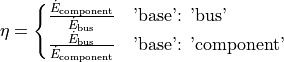
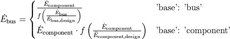

Connections¶
This section provides an overview of the parametrisation of connections, the usage of references and busses (connections for energy flow).
Parametrisation¶
As mentioned in the introduction, for each connection you can specify the following parameters:
mass flow* (m),
volumetric flow (v),
pressure* (p),
enthalpy* (h),
temperature* (T),
vapor mass fraction for pure fluids (x),
a fluid vector (fluid) and
a balance closer for the fluid vector (fluid_balance).
It is possible to specify values, starting values, references and data
containers. The data containers for connections are dc_prop for fluid
properties (mass flow, pressure, enthalpy, temperature and vapor mass
fraction) and dc_flu for fluid composition. If you want to specify
data_containers, you need to import them from the tespy.tools module.
In order to create the connections we create the components to connect first.
from tespy.tools import FluidProperties as dc_prop
from tespy.connections import Connection, Ref
from tespy.components import Sink, Source
# create components
source1 = Source('source 1')
source2 = Source('source 2')
sink1 = Sink('sink 1')
sink2 = Sink('sink 2')
# create connections
myconn = Connection(source1, 'out1', sink1, 'in1')
myotherconn = Connection(source2, 'out1', sink2, 'in1')
# set pressure and vapor mass fraction by value, temperature and enthalpy
# analogously
myconn.set_attr(p=7, x=0.5)
# set starting values for mass flow, pressure and enthalpy (has no effect
# on temperature and vapor mass fraction!)
myconn.set_attr(m0=10, p0=15, h0=100)
# do the same with a data container
myconn.set_attr(p=dc_prop(val=7, val_set=True),
x=dc_prop(val=0.5, val_set=True))
myconn.set_attr(m=dc_prop(val0=10), p=dc_prop(val0=15),
h=dc_prop(val0=100))
# specify a referenced value: pressure of myconn is 1.2 times pressure at
# myotherconn minus 5 (unit is the network's corresponding unit)
myconn.set_attr(p=Ref(myotherconn, 1.2, -5))
# specify value and reference at the same time
myconn.set_attr(p=dc_prop(val=7, val_set=True,
ref=Ref(myotherconn, 1.2, -5), ref_set=True))
# possibilities to unset values
myconn.set_attr(p=np.nan)
myconn.set_attr(p=None)
myconn.p.set_attr(val_set=False, ref_set=False)
If you want to specify the fluid vector you can do it in the following way.
Note
If you specify a fluid, use the fluid’s name and do not include the fluid property back end.
from tespy.tools import FluidComposition as dc_flu
# set both elements of the fluid vector
myconn.set_attr(fluid={'water': 1, 'air': 0})
# same thing, but using data container
myconn.set_attr(fluid=dc_flu(val={'water': 1, 'air': 0},
val_set={'water': True, 'air': True}))
# set starting values
myconn.set_attr(fluid0={'water': 1, 'air': 0})
# same thing, but using data container
myconn.set_attr(fluid=dc_flu(val0={'water': 1, 'air': 0}))
# unset full fluid vector
myconn.set_attr(fluid={})
# unset part of fluid vector
myconn.fluid.set_attr(val_set={'water': False})
Note
References can not be used for fluid composition at the moment!
You may want to access the network’s connections other than using the variable names, for example in an imported network or connections from a subsystem. It is possible to access these using the connection’s label. By default, the label is generated by this logic:
source:source_id_target:target_id, where
sourceandtargetare the labels of the components that are connected.source_idandtarget_idare e.g.out1andin2respectively.
myconn = Connection(source1, 'out1', sink1, 'in1', label='myconnlabel')
mynetwork.add_conns(myconn)
mynetwork.get_conn('myconnlabel').set_attr(p=1e5)
Note
The label can only be specified on creation of the connection. Changing the label after might break this access method.
Busses¶
Busses are energy flow connectors. You can sum the energy flow of different components and create relations between components regarding mass independent energy transport.
Different use-cases for busses could be:
post-processing
introduce motor or generator efficiencies
create relations of different components
The handling of busses is very similar to connections and components. You need to add components to your busses as a dictionary containing at least the instance of your component. Additionally you may provide a characteristic line, linking the ratio of actual value to a referenced value (design case value) to an efficiency factor the component value of the bus is multiplied with. For instance, you can provide a characteristic line of an electrical generator or motor for a variable conversion efficiency. The referenced value is retrieved by the design point of your system. Offdesign calculations use the referenced value from your system’s design point for the characteristic line. In design case, the ratio will always be 1.
After a simulation, it is possible to output the efficiency of a component on a bus and to output the bus value of the component using
mycomponent.calc_bus_efficiency(mybus)mycomponent.calc_bus_value(mybus)
These data are also available in the network’s results dictionary and contain
the bus value,
the component value,
the efficiency value and
the design value of the bus.
bus_results = mynetwork.results['power output']
Note
The available keywords for the dictionary are:
‘comp’ for the component instance.
‘param’ for the parameter (e.g. the combustion engine has various parameters, have a look at the combustion engine example)
‘char’ for the characteristic line
‘base’ the base for efficiency definition
‘P_ref’ for the reference value of the component
There are different specification possibilities:
If you specify the component only, the parameter will be default and the efficiency factor of the characteristic line will be 1 independent of the load.
If you specify a numeric value for char, the efficiency factor will be equal to that value independent of the load.
If you want to specify a characteristic line, provide a
CharLineobject.Specify
'base': 'bus'if you want to change from the default base to the bus as base. This means, that the definition of the efficiency factor will change according to your specification.
This applies to the calculation of the bus value analogously.

The examples below show the implementation of busses in your TESPy simulation.
Create a pump that is powered by a turbine. The turbine’s turbine_fwp
power output must therefore be equal to the pump’s fwp power
consumption.
from tespy.networks import Network
from tespy.components import Pump, Turbine, CombustionEngine
from tespy.connections import Bus
# the total power on this bus must be zero
# this way we can make sure the power of the turbine has the same value as
# the pump's power but with negative sign
fwp_bus = Bus('feed water pump bus', P=0)
fwp_bus.add_comps({'comp': turbine_fwp}, {'comp': fwp})
my_network.add_busses(fwp_bus)
Create two turbines turbine1 and turbine2 which have the same
power output.
# the total power on this bus must be zero, too
# we make sure the two turbines yield the same power output by adding the char
# parameter for the second turbine and using -1 as char
turbine_bus = Bus('turbines', P=0)
turbine_bus.add_comps({'comp': turbine_1}, {'comp': turbine_2, 'char': -1})
my_network.add_busses(turbine_bus)
Create a bus for post-processing purpose only. Include a characteristic line
for a generator and add two turbines turbine_hp and turbine_lp
to the bus.
# bus for postprocessing, no power (or heat flow) specified but with variable
# conversion efficiency
power_bus = Bus('power output')
x = np.array([0.2, 0.4, 0.6, 0.8, 1.0, 1.1])
y = np.array([0.85, 0.93, 0.95, 0.96, 0.97, 0.96])
# create a characteristic line for a generator
gen = CharLine(x=x, y=y)
power.add_comps(
{'comp': turbine_hp, 'char': gen1},
{'comp': turbine_lp, 'char': gen2})
my_network.add_busses(power_bus)
Create a bus for the electrical power output of a combustion engine
comb_engine. Use a generator for power conversion and specify the total
power output.
# bus for combustion engine power
el_power_bus = Bus('combustion engine power', P=-10e6)
el_power_bus.add_comps({'comp': comb_engine, 'param': 'P', 'char': gen})
Create a bus for the electrical power input of a pump pu with
'bus' and with 'component' as base. In both cases, the value of
the component power will be identical. Due to the different efficiency
definitions the value of the bus power will differ in part load.
import numpy as np
from tespy.components import Pump, Sink, Source
from tespy.connections import Bus, Connection
from tespy.networks import Network
from tespy.tools.characteristics import CharLine
nw = Network(fluids=['H2O'], p_unit='bar', T_unit='C')
si = Sink('sink')
so = Source('source')
pu = Pump('pump')
so_pu = Connection(so, 'out1', pu, 'in1')
pu_si = Connection(pu, 'out1', si, 'in1')
nw.add_conns(so_pu, pu_si)
# bus for combustion engine power
x = np.array([0.2, 0.4, 0.6, 0.8, 1.0, 1.1])
y = np.array([0.85, 0.93, 0.95, 0.96, 0.97, 0.96])
# create a characteristic line for a generator
mot_bus_based = CharLine(x=x, y=y)
mot_comp_based = CharLine(x=x, y=1 / y)
bus1 = Bus('pump power bus based')
bus1.add_comps({'comp': pu, 'char': mot_bus_based, 'base': 'bus'})
# the keyword 'base': 'component' is the default value, therefore it does
# not need to be passed
bus2 = Bus('pump power component based')
bus2.add_comps({'comp': pu, 'char': mot_comp_based})
nw.add_busses(bus1, bus2)
so_pu.set_attr(fluid={'H2O': 1}, m=10, p=5, T=20)
pu_si.set_attr(p=10)
pu.set_attr(eta_s=0.75)
nw.solve('design')
nw.save('tmp')
print('Bus based efficiency:', pu.calc_bus_efficiency(bus1))
print('Component based efficiency:', 1 / pu.calc_bus_efficiency(bus2))
print('Bus based bus power:', pu.calc_bus_value(bus1))
print('Component based bus power:', pu.calc_bus_value(bus2))
so_pu.set_attr(m=9)
nw.solve('offdesign', design_path='tmp')
print('Bus based efficiency:', pu.calc_bus_efficiency(bus1))
print('Component based efficiency:', 1 / pu.calc_bus_efficiency(bus2))
print('Bus based bus power:', pu.calc_bus_value(bus1))
print('Component based bus power:', pu.calc_bus_value(bus2))
# get DataFrame with the bus results
bus_results = nw.results['pump power bus based']
Note
The x-values of the characteristic line represent the relative load of the component: actual value of the bus divided by the reference/design point value. In design-calculations the x-value used in the function evaluation will always be at 1.
As mentioned in the component section: It is also possible to import your
custom characteristics from the HOME/.tespy/data folder. Read more
about this here.